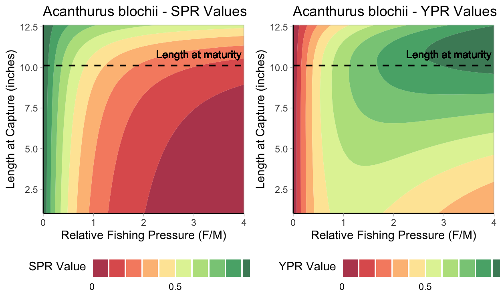
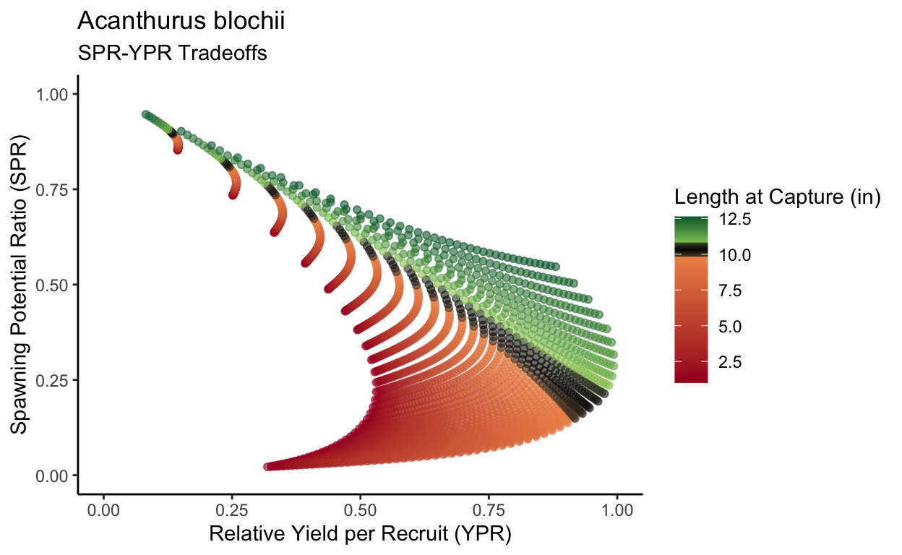
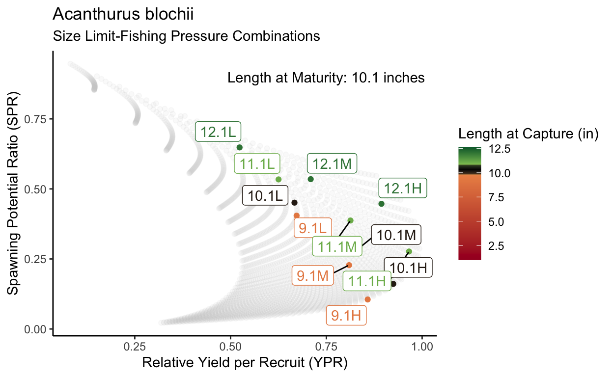
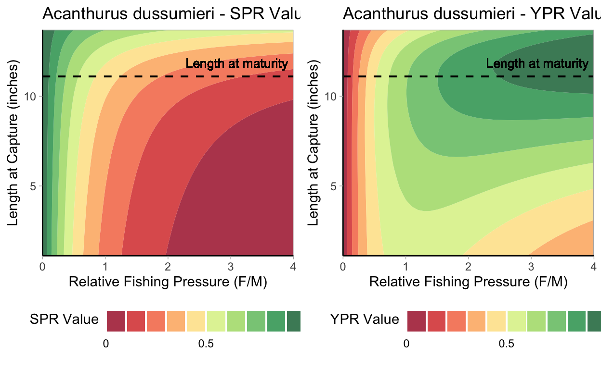
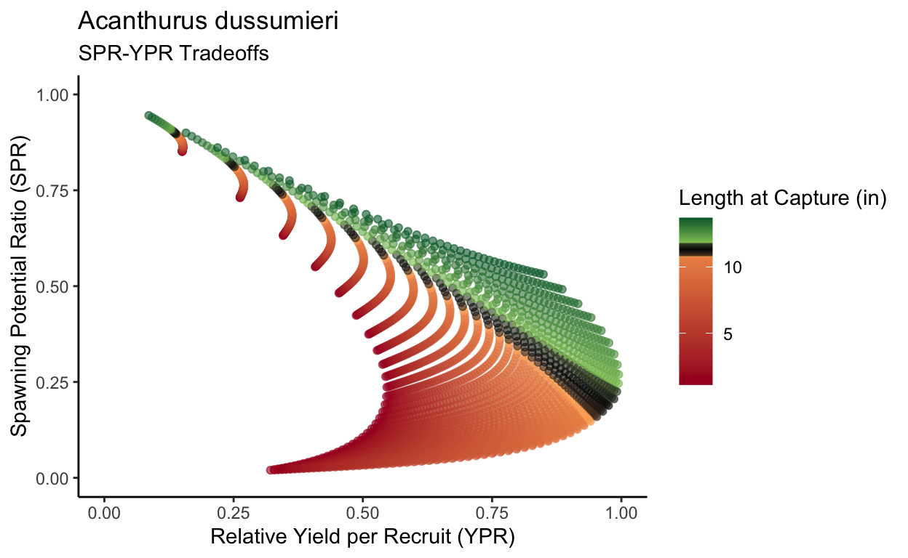
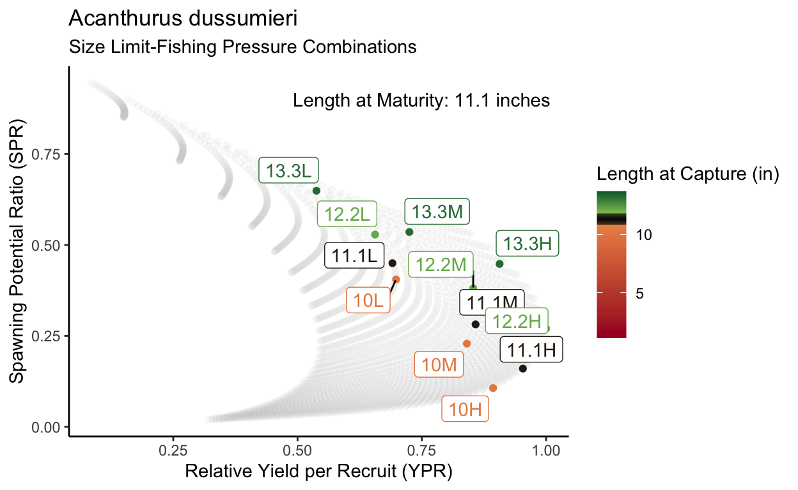

Report prepared for the Nature Conservancy and for Ka‘ūpūlehu Marine Life Advisory Committee
This report contains an analysis of size limit options for 33 reef-associated fish species that was conducted in support of continued development of management measures at Ka‘ūpūlehu Marine Reserve, Hawaiʻi Island. This work is provided for consideration by Ka‘ūpūlehu Marine Life Advisory Committee (KMLAC) in support of development of a long-term sustainable fishery at Ka‘ūpūlehu and Kūki‘o on Hawaiʻi Island. Through a previous series of workshops coordinated by KMLAC and The Nature Conservancy, size limits were identified as one of several priority management options.
In this report, the effects of species-specific size limits are analyzed in terms of optimization of fishing yield and protection of spawning biomass. This analysis is constructed from the perspective that reaching spawning size prior to becoming vulnerable to fishing is a relevant consideration for ensuring long-term sustainability of fish populations. Thus, size limit options are explored relative to size at maturity. Accordingly, the analysis is intended to guide decision-making in relation to yield and spawning biomass objectives, and to support on-going community-led discussions about preference, feasibility, and pragmatism of size limits as management measures within the Kaʻūpūlehu Comprehensive Management Plan.
Spawning Potential Ratio and Yield per Recruit Analyses
library(tidyverse)
library(here)
library(janitor)
library(LBSPR)
library(dplyr)
library(kableExtra)
library(ggalt)
library(ggrepel)
library(knitr)
library(directlabels)
library(gridExtra)
library(ggplot2)
library(viridis)
library(RColorBrewer)
# Read in CSV
species <- read_csv("Final_Species_List.csv")
## LBSPR function
lh_function <- function(row) {
# Create a new LB_pars object for each species
MyPars <- new("LB_pars")
MyPars@Species<-row['species']
MyPars@Linf <- as.numeric(row['Linf'])
MyPars@L50 <- as.numeric(row['L50'])
MyPars@L95 <- as.numeric(row['L95'])
MyPars@MK <- as.numeric(row['M/K'])
MyPars@BinWidth <- as.numeric(row['BinWidth'])
MyPars@Steepness<-0.99
MyPars@L_units <- "mm"
MyPars@Walpha <- as.numeric(row['LW_A'])
MyPars@Walpha_units <- "g"
MyPars@Wbeta <- as.numeric(row['LW_B'])
MyPars@FecB <- as.numeric(row['LW_B'])
MyPars@BinMin <- 0
#Setup place holder values for these parameters, we will change these later
MyPars@SL50 <- as.numeric(row['SL50'])
MyPars@SL95 <- as.numeric(row['SL95'])
MyPars@FM<-1
return(list(MyPars=MyPars, CurrentLc=as.numeric(row['CurrentLc_mm'])))
}
## YPR Function
ypr_function<-function(MyParsList, SL_options, FM_options){
rw<-NROW(MyParsList)
YPR<-list()
SPR<-list()
EU<-list()
for (k in 1:rw){
YPR[[k]]<-data.frame()
SPR[[k]]<-data.frame()
EU[[k]]<-list()
# SL filtering
if(!is.na(MyParsList[[k]]$CurrentLc)) {
SL_tmp<-round(c(SL_options*MyParsList[[k]]$MyPars@L50, MyParsList[[k]]$CurrentLc),0)
SL_names<-c(paste0(SL_options, " x Lm"), "Current size limit")
}
if(is.na(MyParsList[[k]]$CurrentLc)) {
SL_tmp<-round(SL_options*MyParsList[[k]]$MyPars@L50,0)
SL_names<-paste0(SL_options, " x Lm")
}
Keep<-c(SL_tmp < 0.95*MyParsList[[k]]$MyPars@Linf)
SL_options_mult<-SL_options[Keep]
SL_options_mm<-SL_tmp[Keep]
SL_names<-SL_names[Keep]
SL_options_inch <- round(SL_options_mm/25.4,1)
#Loop over FM options
for (i in 1:NROW(FM_options)){
tmpYPR<-data.frame()
tmpSPR<-data.frame()
#loop over Lc options
for (j in 1:NROW(SL_options_mm)){
tmpPars<-MyParsList[[k]]$MyPars
tmpPars@FM<-FM_options[i]
tmpPars@SL50 <- SL_options_mm[j]
tmpPars@SL95 <- SL_options_mm[j]+1
tmpSim <- LBSPRsim(tmpPars, verbose=FALSE)
tmpYPR<-rbind(tmpYPR, list(Name=SL_names[j], Lc_mm=SL_options_mm[j], Lc_inch=SL_options_inch[j], Lc_Linf=SL_options_mm[j]/MyParsList[[k]]$MyPars@Linf, FM=FM_options[i], YPR=tmpSim@YPR))
tmpSPR<-rbind(tmpSPR, list(Name=SL_names[j], Lc_mm=SL_options_mm[j], Lc_inch=SL_options_inch[j], FM=FM_options[i], SPR=tmpSim@SPR))
}
#Save to master list
YPR[[k]]<-rbind(YPR[[k]], tmpYPR)
SPR[[k]]<-rbind(SPR[[k]], tmpSPR)
}
YPR[[k]]$YPR<-YPR[[k]]$YPR/max(YPR[[k]]$YPR)
#Eumetric analysis
Lc<-seq(0.1*MyParsList[[k]]$MyPars@L50,0.95*MyParsList[[k]]$MyPars@Linf,5)
F_M<-seq(0, 4, 0.1)
#x = seq(0, 1, length.out = nrow(z)),
#y = seq(0, 1, length.out = ncol(z)),
#z
SPR_EU<-matrix(nrow=NROW(F_M), ncol=NROW(Lc))
YPR_EU<-matrix(nrow=NROW(F_M), ncol=NROW(Lc))
for (i in 1:NROW(F_M)){
for (j in 1:NROW(Lc)){
tmpPars<-MyParsList[[k]]$MyPars
tmpPars@FM<-F_M[i]
tmpPars@SL50 <- Lc[j]
tmpPars@SL95 <-Lc[j]+1
tmpSim <- LBSPRsim(tmpPars, verbose=FALSE)
SPR_EU[i,j]=tmpSim@SPR
YPR_EU[i,j]=tmpSim@YPR
}
}
x<-which(YPR_EU==max(YPR_EU), arr.ind=TRUE)
YPR_EU<-YPR_EU/YPR_EU[x[1],x[2]]
EU[[k]]$SPR_EU<-SPR_EU
EU[[k]]$YPR_EU<-YPR_EU
EU[[k]]$Lc<-Lc
EU[[k]]$F_M<-F_M
EU[[k]]$L50<-MyParsList[[k]]$MyPars@L50
}
return(list(YPR=YPR, SPR=SPR, EU=EU))
}
### Conduct analysis
## Step 1. Set number of species to analyze
# Run whole list
#MyParsList_all<-apply(species, 1, lh_function)
# Run for two species
#MyParsList_two<-apply(species[13:14,], 1, lh_function)
# Set option
#MyParsList <- MyParsList_two
MyParsList<-readRDS("MyParsList.rds")
## Step 2. Run SL & FM options
SL_options<-c(0.9, 1, 1.1, 1.2, 1.3)
FM_options<-c(1, 2, 3)
## Step 3. Run analysis function ypr_function
#output<-ypr_function(MyParsList, SL_options, FM_options)
output<-readRDS("output.rds")
Albulidae - Bonefishes
### Appendix
# Text template for createText function
template <- "#### Species: **%s**
###### **Hawaiian Name:** %s
###### **Common Name:** %s
###### **Family:** %s
###### **Current Minimum Size Limit:** %s
##### Life History Parameters
###### **L infinity (von Bertalanffy growth parameter):** %s millimeters
###### **K (von Bertalanffy growth parameter):** %s year^-1
###### **t0 (von Bertalanffy growth parameter):** %s
###### **Length at maturity (inches):** %s inches
###### **M (natural mortality rate):** %s year^-1
###### **Longevity:** %s years
"
# Text template function
createText <- function(fish) {
text <- cat(sprintf(template, fish$species, fish$hawaii_name, fish$common_name, fish$common_family, fish$CurrentLc_in_label, fish$Linf, fish$K, fish$t0, fish$Lm_in, fish$M, fish$LONG))
return(text)
}
###################################################
### Full function to create 2 tables and 4 charts
for (k in 1:2){
# Text for each species
one_species <- species %>%
filter(species == MyParsList[[k]]$MyPars@Species)
cat(createText(one_species))
######################################################
### Tables
# SPR Table
SPR<-output$SPR[[k]]
SPR_wide<-SPR %>%
pivot_wider(id_cols=c(Name, Lc_mm, Lc_inch), names_from = FM, values_from = SPR)
options(knitr.kable.NA = "")
colnames(SPR_wide)<-c("Option", "mm", "inches", "Low", "Med", "High")
nameSPR<-c(NCOL(SPR_wide))
names(nameSPR) <- c(paste0(MyParsList[[k]]$MyPars@Species, " - SPR Values"))
namesSub<-c(1,2,(NCOL(SPR_wide)-3))
print(kable(SPR_wide, align = "llcccc", digits = 3, caption = names(nameSPR)) %>%
kable_styling(c("condensed", "responsive", "bordered"),
bootstrap_options = "striped",
full_width = F,
position = "float_left"
) %>%
column_spec(4:6, bold = TRUE) %>%
add_header_above(c("Minimum Size Limit" = 3, "Fishing Pressure (F/M)" = 3)) %>%
column_spec(4, border_left = T))
# YPR Table
ypr_plot <- YPR<-output$YPR[[k]]
YPR_wide<-YPR %>%
pivot_wider(id_cols=c(Name, Lc_mm, Lc_inch), names_from = FM, values_from = YPR)
colnames(YPR_wide)<-c("Option", "mm", "inches", "Low", "Med", "High")
options(knitr.kable.NA = "")
nameYPR<-c(NCOL(SPR_wide))
names(nameYPR)<-c(paste0(MyParsList[[k]]$MyPars@Species, " - YPR Values"))
namesSub<-c(1,2,(NCOL(SPR_wide)-3))
print(kable(YPR_wide, align = "llcccc", digits = 3, caption = names(nameYPR)) %>%
kable_styling(c("condensed", "responsive", "bordered"), bootstrap_options = "striped",
full_width = F,
position = "right"
) %>%
column_spec(4:6, bold = TRUE) %>%
column_spec(4, border_left = T) %>%
add_header_above(c("Minimum Size Limit" = 3, "Fishing Pressure (F/M)" = 3)))
######################################################
### Contour Plots
EU_grid<-expand.grid(Lc=output$EU[[k]]$Lc/25.4,
F_M=output$EU[[k]]$F_M)
EU_grid$ypr<-as.vector(t(output$EU[[k]]$YPR_EU))
EU_grid$spr<-as.vector(t(output$EU[[k]]$SPR_EU))
# YPR Contour Plot
ypr_plot <- ggplot(EU_grid, aes(x=F_M, y=Lc, z=ypr)) +
geom_contour_filled(binwidth=0.1, alpha = 0.8) +
scale_fill_brewer(palette = "RdYlGn", labels =c(0, " ", " ", " ", " ", 0.5, " ", " ", " ", " ", 1)) +
geom_hline(yintercept =output$EU[[k]]$L50/25.4, linetype="dashed",
color = "black", size=0.7) +
geom_text(size = 3.5, aes(3.1,output$EU[[k]]$L50/25.4,label = "Length at maturity", vjust = -1)) +
theme_light() +
labs(y="Length at Capture (inches)", x = "Relative Fishing Pressure (F/M)", title = names(nameYPR))+
guides(fill=guide_bins(
title = "YPR Value",
direction = "horizontal",
title.position = "left",
title.vjust = 0.9,
label.position = "bottom",
show.limits = TRUE,
axis = FALSE,
keywidth = unit(5.5, "mm"))) +
theme(panel.grid.major = element_blank(), panel.grid.minor = element_blank(),
panel.background = element_blank(), axis.line = element_line(colour = "black"),
legend.position = "bottom") +
scale_x_continuous(expand = c(0, 0)) +
scale_y_continuous(expand = c(0, 0))
# SPR Contour Plot
spr_plot <- ggplot(EU_grid, aes(x=F_M, y=Lc, z=spr)) +
geom_contour_filled(binwidth=0.1, alpha = 0.8) +
scale_fill_brewer(palette = "RdYlGn", labels =c(0, " ", " ", " ", " ", 0.5, " ", " ", " ", " ", 1)) +
geom_hline(yintercept =output$EU[[k]]$L50/25.4, linetype="dashed",
color = "black", size=0.7) +
geom_text(size = 3.5, aes(3.1,output$EU[[k]]$L50/25.4,label = "Length at maturity", vjust = -1)) +
theme_light() +
labs(y="Length at Capture (inches)", x = "Relative Fishing Pressure (F/M)", title = names(nameSPR))+
guides(fill=guide_bins(
title = "SPR Value",
direction = "horizontal",
title.position = "left",
title.vjust = 0.9,
label.position = "bottom",
show.limits = TRUE,
axis = FALSE,
keywidth = unit(5.5, "mm"))) +
theme(panel.grid.major = element_blank(), panel.grid.minor = element_blank(),
panel.background = element_blank(), axis.line = element_line(colour = "black"),
legend.position = "bottom") +
scale_x_continuous(expand = c(0, 0)) +
scale_y_continuous(expand = c(0, 0))
# Side by side contour plots
grid.arrange(spr_plot, ypr_plot, nrow = 1)
##########################################
### Pareto Plots
# Pareto plots prep
Flevel<-c(0,4)
EU_tmp<-EU_grid %>%
filter(F_M > Flevel[1],
F_M < Flevel[2])
values<-c(0,
(output$EU[[k]]$L50/25.4-0.5)/max(EU_tmp$Lc)-0.01,
(output$EU[[k]]$L50/25.4-0.5)/max(EU_tmp$Lc),
(output$EU[[k]]$L50/25.4+0.5)/max(EU_tmp$Lc),
(output$EU[[k]]$L50/25.4+0.5)/max(EU_tmp$Lc)+0.01,
1)
colors<-c("#A50026","#FDAE61","black","#A6D96A","#006837")
pareto_title_one <- c(paste0(MyParsList[[k]]$MyPars@Species))
pareto_subtitle_one <- c(paste0("SPR-YPR Tradeoffs"))
pareto_title_two <- c(paste0(MyParsList[[k]]$MyPars@Species))
pareto_subtitle_two <- c(paste0("Size Limit-Fishing Pressure Combinations"))
# Pareto plot - gradient
print(ggplot(EU_tmp, aes(x=ypr, y=spr, colour=Lc)) +
geom_point(alpha = 0.6) +
scale_colour_gradientn(
name="Length at Capture (in)",
colors=colors,
values=values) +
ylim(0,1) +
xlim(0,1) +
labs(y="Spawning Potential Ratio (SPR)", x = "Relative Yield per Recruit (YPR)", title = pareto_title_one, subtitle = pareto_subtitle_one) +
theme(panel.grid.major = element_blank(), panel.grid.minor = element_blank(),
panel.background = element_blank(), axis.line = element_line(colour = "black"),
legend.position = "right")) +
theme_light()
# Pareto point plot prep
dt=data.frame(YPR=output$YPR[[k]]$YPR[output$YPR[[k]]$Name != "Current size limit"],
SPR=output$SPR[[k]]$SPR[output$SPR[[k]]$Name != "Current size limit"],
Lc= output$SPR[[k]]$Lc_inch[output$SPR[[k]]$Name != "Current size limit"],
F_M=factor(output$SPR[[k]]$FM[output$SPR[[k]]$Name != "Current size limit"],labels=c("L", "M", "H")))
# Pareto Point Plot
print(ggplot() +
geom_point(data=EU_tmp, aes(x=ypr, y=spr), colour="lightgrey", alpha=0.1) +
geom_point(data=dt, aes(x=YPR, y=SPR, colour=Lc)) +
scale_colour_gradientn(
name="Length at Capture (in)",
colors=colors,
values=values,
limits=c(min(EU_tmp$Lc), max(EU_tmp$Lc))) +
geom_label_repel(data=dt, aes(x=YPR, y=SPR, colour=Lc, label = paste0(Lc,F_M)), segment.color = 'black') +
annotate(geom="text", x=0.75, y=0.9, label=paste0("Length at Maturity: ", round(output$EU[[k]]$L50/25.4,1), " inches")) +
labs(y="Spawning Potential Ratio (SPR)", x = "Relative Yield per Recruit (YPR)", title = pareto_title_two, subtitle = pareto_subtitle_two)+
theme(panel.grid.major = element_blank(), panel.grid.minor = element_blank(),
panel.background = element_blank(), axis.line = element_line(colour = "black"),
legend.position = "right")) +
theme_light()
cat(" \n")
cat(" \n")
cat(" \n")
}
| Option | mm | inches | Low | Med | High |
|---|---|---|---|---|---|
| 0.9 x Lm | 231 | 9.1 | 0.405 | 0.228 | 0.105 |
| 1 x Lm | 257 | 10.1 | 0.451 | 0.283 | 0.161 |
| 1.1 x Lm | 283 | 11.1 | 0.534 | 0.387 | 0.277 |
| 1.2 x Lm | 308 | 12.1 | 0.648 | 0.535 | 0.447 |
| Option | mm | inches | Low | Med | High |
|---|---|---|---|---|---|
| 0.9 x Lm | 231 | 9.1 | 0.672 | 0.809 | 0.858 |
| 1 x Lm | 257 | 10.1 | 0.667 | 0.830 | 0.925 |
| 1.1 x Lm | 283 | 11.1 | 0.625 | 0.813 | 0.966 |
| 1.2 x Lm | 308 | 12.1 | 0.523 | 0.709 | 0.894 |

| Option | mm | inches | Low | Med | High |
|---|---|---|---|---|---|
| 0.9 x Lm | 254 | 10.0 | 0.405 | 0.229 | 0.107 |
| 1 x Lm | 282 | 11.1 | 0.450 | 0.282 | 0.160 |
| 1.1 x Lm | 310 | 12.2 | 0.529 | 0.381 | 0.270 |
| 1.2 x Lm | 338 | 13.3 | 0.649 | 0.536 | 0.448 |
| Option | mm | inches | Low | Med | High |
|---|---|---|---|---|---|
| 0.9 x Lm | 254 | 10.0 | 0.698 | 0.841 | 0.893 |
| 1 x Lm | 282 | 11.1 | 0.691 | 0.858 | 0.953 |
| 1.1 x Lm | 310 | 12.2 | 0.656 | 0.853 | 1.000 |
| 1.2 x Lm | 338 | 13.3 | 0.538 | 0.725 | 0.906 |
